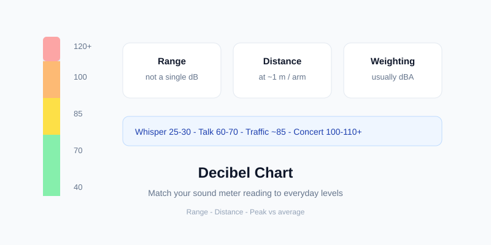

Decibel Chart: What Your Sound Meter Reading Means
Updated Nov 17, 2026 • 9 min read
Just measured 65 dB or 85 dB on a sound meter and wondering what that means in real life? Use this decibel chart to place your reading next to everyday sounds—conversation, traffic, tools, concerts—and decide whether the level is “normal for the situation,” something to limit, or something to step away from.
Quick answer: what does my reading mean?
- Under ~70 dBA: usually fine for long periods (quiet room → conversation → busy kitchen).
- ~70–85 dBA: noticeable; fine for a while, watch long continuous exposure.
- ~85 dBA and up: treat as “watch the clock” or use hearing protection.
- 100+ dBA: minutes matter—lower volume, move back, or leave.
For exposure-time details, see safe decibel levels. Open the sound meter to check your space.
Decibel chart of everyday sounds
Compare your meter’s level to the ranges below. Numbers are typical A-weighted (dBA) bands from public health and education sources—not a promise that your phone will hit the exact same value.
| Sound | Typical range | Common distance | Easy to misread |
|---|---|---|---|
| Threshold of hearing | ~0 dBA | — | Not a usable “target” for meters in a real room |
| Whisper / quiet library | 25–40 dBA | Near listener | HVAC alone can push a “quiet” room higher |
| Refrigerator hum | 40–55 dBA | ~1 m | Closer to the compressor reads much louder |
| Normal conversation | 60–70 dBA | ~1 m / arm’s length | Raised voice or noisy café pushes 75–80 |
| Vacuum / dishwasher | 65–80 dBA | ~1–3 m | Charts often list one number; real range is wide |
| City traffic / busy street | 70–85 dBA | Curb / sidewalk | Inside a car ≠ outside on the sidewalk |
| Lawn mower / power tools | 80–100 dBA | Operator / ~1–3 ft | Operator position is much louder than a neighbor’s yard |
| Motorcycle / subway / loud gym | 90–110 dBA | Near source / platform | Pass-by peaks look “high” even if average is lower |
| Concert / club / max headphones | 95–115 dBA | Audience / ear canal | Near speakers ≫ back of venue |
| Siren (nearby) | 110–130 dBA | Close / roadside | Short burst; distance collapses the number fast |
| Fireworks / gunshot (close) | 140–160+ dB | Very close | Usually peak / impulse, not a steady LAeq |
Not medical or regulatory advice. Browser and phone meters are screening tools—see our methodology and accuracy notes.
How to read your sound meter with this chart
- Open the Online Sound Meter and allow the microphone.
- Stand where you actually hear the sound (your desk, the crib, the sidewalk)—not pressed against the speaker or tucked in a pocket.
- Watch the level for 20–30 seconds. Use the stable band you see most of the time, not a one-second spike (unless you are checking a slam, siren, or firework).
- Find that band on the chart. Ask: is this roughly what I’d expect for conversation / traffic / a tool—or is it surprisingly high for this place?
- If you land near 85 dBA or higher, shorten the time, turn volume down, step back, or use protection—then check how long is safe.
Why your reading may not match the chart exactly
A 5–15 dB difference from a table is common. It usually means the situation changed—not that your meter is “broken.”
- Distance: Charts often assume ~1 m or “arm’s length.” Closer to a vacuum or speaker reads much louder; farther away reads quieter.
- Peak vs steady level: A door slam or bass hit can flash high while the room average stays lower. Use the steady reading for “how loud is this place.”
- Room and phone: Hard kitchens bounce sound; cases and pockets block the mic. Hold the phone in open air.
- dBA vs plain “dB”: Everyday charts and our meter are oriented around A-weighting. Mixing unlabeled “dB” apps with a dBA chart creates fake mismatch. More: dBA vs dBC.
Better placement habits: How to measure decibels more accurately. Phone limits: Are smartphone meters accurate?
Distance tip (so the chart makes sense)
When a chart lists a level “at about 1 m” and you stand farther away, expect a lower number.
- Many small sources (appliance, speaker): roughly −6 dB when you double the distance outdoors.
- Steady road traffic: closer to −3 dB per doubling.
- Practical takeaway: if a tool feels “chart-loud” only when you stand next to it, step back one more body length and measure again before deciding it is “always that loud.”
What the number feels like
- About +3 dB on the meter is often just noticeable.
- About +10 dB often feels roughly “twice as loud.”
- Hearing risk still tracks time as well as level—see the 3 dB rule and safe levels.
Next steps after you know the level
- Need exposure time at 85 / 95 / 100 dBA? Safe Decibel Levels
- Headphones or earbuds: How loud is too loud?
- Baby white-noise machine: measure at the crib—safe volume guide
- Gym / spin class: typical levels & hearing tips
FAQ
What is a decibel chart?
A simple map of everyday sounds to approximate loudness (usually in dBA). Use it to interpret a sound meter reading—not as a lab certificate for your room.
Is 70 dB loud?
Around 70 dBA is often like busy traffic or a vacuum a few steps away—clearly audible, usually okay for longer stretches if it is not much louder all day. Check safe levels if the sound runs for hours.
Is 85 dB dangerous?
85 dBA is the usual “start watching how long you stay” zone (about an 8-hour occupational reference). Risk depends on both the level and how long you are exposed.
Why doesn’t my phone match the chart?
Match distance first, use a steady reading (not one spike), keep the mic clear, and compare to a range—not a single printed number. Gaps of several dB are normal.
Are fireworks really 140 dB?
Close-up impulse peaks can reach that ballpark. Farther away—or looking at a longer average—the number drops a lot. Treat those chart lines as “very close, very short peaks,” not what you hear from across the park.